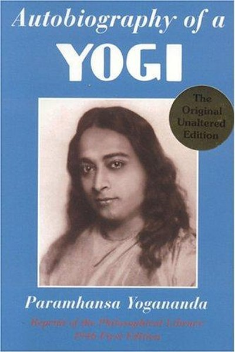

Library › Self-Improvement
Autobiography of a Yogi — Summary & Key Lessons

The spiritual classic that carried a yogi's journey to the West.
📖 OPEN THE FULL INTERACTIVE BREAKDOWN →🌐 Read it in Hindi, Hinglish, Gujarati, Tamil & 22 more languages — free, with audio.
💡 The Big Idea
Spiritual growth is not vague mysticism — it is a science with methods, masters and reproducible practices. Yogananda documents his journey from a curious boy in Bengal to a realized yogi, showing that direct experience of a higher reality is available to anyone willing to practice, serve and seek a qualified teacher. The book makes the case that the material world is not the whole story, and that meditation is the laboratory where that truth can be tested.
🧠 The 7 Key Lessons
Lesson 1: The Search Begins — Why We Seek
Early Years
Yogananda starts as a restless boy who feels that something is missing despite a comfortable life. He chases holy men across India, testing each one, refusing to settle for ritual or hearsay. The lesson: the spiritual search begins with honest restlessness — the refusal to accept that material comfort is the whole answer. Most people bury that restlessness in distraction; seekers turn it into a question.
📖 Example: As a boy he runs away from home twice looking for a guru in the Himalayas, and is brought back both times — but the longing never dies. That longing, not comfort, shapes his entire life. Read the full example →
⚡ Do this: Write down one question about life that you have never allowed yourself to ask. Sit with it for ten minutes without reaching for your phone.
Lesson 2: The Guru Is a Catalyst, Not a Crutch
Meeting Sri Yukteswar
Yogananda finally meets Sri Yukteswar, a master who is strict, unsentimental and demanding. Their relationship is not devotional fluff — Yukteswar corrects, tests and sometimes humiliates him to burn away ego. The lesson: a good teacher's job is not to make you feel good but to make you see clearly. The right mentor accelerates growth not by giving answers but by refusing to let you fake understanding.
📖 Example: Yukteswar often seems cold and dismissive, yet Yogananda realizes later that every harsh correction saved him years of wandering. The master's sharpness was precision, not cruelty. Read the full example →
⚡ Do this: Identify one person who challenges you rather than flatters you. Ask them one honest question about your blind spot this week.
Lesson 3: Kriya Yoga — Breathing as Technology
The Science of Kriya
Yogananda presents Kriya Yoga as an ancient technique of breath and energy control that accelerates spiritual evolution, which he likens to a 'spiritual telescope'. The point is not the exoticism but the principle: inner states can be trained like skills. Breath is the bridge between body and mind — regulate it and you regulate attention, emotion and energy. This is the most practical takeaway: you don't need a mountain cave to start the inner work.
📖 Example: Yogananda explains Kriya as thousands of years of natural breathing compressed into minutes — a technique he says was revived by his guru-lineage and which he later taught to hundreds of thousands of Westerners. Read the full example →
⚡ Do this: Try five minutes of slow, even breathing (4 counts in, 6 counts out) before your most stressful meeting today. Notice what changes.
Lesson 4: Miracles Point to a Deeper Order
The Law of Miracles
The book is full of extraordinary events — levitation, bilocation, materialization, healing. Yogananda's interpretation is sober: these are not magic tricks but demonstrations that the material world is more pliable than we assume. The lesson for skeptics: keep the phenomena and the message separate. You don't need to believe in levitation to practice meditation — but the stories stretch your model of what is possible, which is exactly what growth requires.
📖 Example: His master Yukteswar appears to Yogananda in Bombay after death to deliver a message — a chapter that frames death not as an end but as a transition between states of consciousness. Read the full example →
⚡ Do this: For one day, notice how many 'impossible' things you assume without testing. Write down one assumption you could actually test cheaply.
Lesson 5: East Meets West — Teaching Without Diluting
America Years
Yogananda takes an Indian tradition to the West and makes it accessible without stripping its depth. He uses science, humor and practical language; he never dumbs down the core. The lesson: universal ideas travel when you translate the container, not the content. Whether you are teaching, selling or building a company, the discipline is the same — respect the essence, adapt the packaging.
📖 Example: In America he fills lecture halls by speaking about meditation as a practical science of mental hygiene, not as a foreign religion — framing that later made yoga and meditation mainstream. Read the full example →
⚡ Do this: Take one idea you understand deeply and explain it to a friend in plain language, keeping the core intact but dropping the jargon.
Lesson 6: Service Is the Fastest Inner Work
Seva and Selflessness
Throughout the memoir, the people who progress fastest are those who serve — the disciples who run the ashram, cook, clean and organize give up more than those who only sit and meditate. The lesson: ego dissolves fastest in action done without credit-seeking. Inner growth is not a parallel track from ordinary life; it is the quality you bring to ordinary tasks.
📖 Example: Yogananda's own master spent decades in unglamorous service before teaching; the pattern repeats across every tradition he encounters. The uncomfortable truth about this lesson: it requires doing the boring version first — the unglamorous reps that nobody… Read the full example →
⚡ Do this: Do one task this week that benefits someone else with zero chance of credit. Notice how it feels different from 'helping' that gets noticed.
Lesson 7: The Body Is Not the Whole Story
Death, Rebirth and the Soul
Yogananda describes death as a shedding of the body, not an annihilation — with accounts of disciples and masters who consciously chose their exit. Whatever your metaphysics, the practical lesson stands: if you treat your body as the whole of who you are, you will be shattered by its decline. Build an inner life — attention, purpose, connection — that does not depend on the body's performance.
📖 Example: His account of his own mother's death and his master's 'mahasamadhi' (conscious exit) frame dying as a skill of letting go rather than a medical failure. body Is Not the Whole Story Read the full example →
⚡ Do this: Ask yourself: if my body and career were gone tomorrow, what of me would remain? Write one sentence of an answer.
✅ 5-Step Action Plan
- Start a daily 5-minute breath or meditation practice — consistency beats intensity.
- Write down the one life question you have been avoiding, and sit with it.
- Find one honest mentor or friend who challenges you, and ask for one piece of feedback.
- Do one anonymous act of service this week.
- Re-read one 'impossible' assumption of yours and design a cheap test for it.
⚠️ When This Doesn't Work
Yogananda's memoir is the most influential spiritual book of the century — and Thomas Cook is the warning it never needed until now: the oldest, most trusted institution in its field, built on a founder's vision of service, lasted 178 years and then died in a weekend because it couldn't adapt to the internet age. Yogananda's teaching — that the soul endures by evolving through lives — applies to institutions too: the ones that survive are the ones that keep reincarnating. The caveat for every spiritual organization: your founder's vision is a starting point, not a fortress. Institutions that stop adapting become museums — even the ones with the most beautiful teachings.
💀 The Graveyard Proves It
🧳 Thomas Cook — 178 Years of Travel, Grounded Overnight. Burn: £1.7B debt; 600,000 tourists stranded. Read the full case study →
💬 Best Quotes from Autobiography of a Yogi
- “The season of failure is the best time for sowing the seeds of success.”
- “Environment is stronger than willpower.”
- “You must not let your life run in the ordinary way; do something that others have not done.”
Interactive version: mark lessons as read, listen in your language, share quote cards.